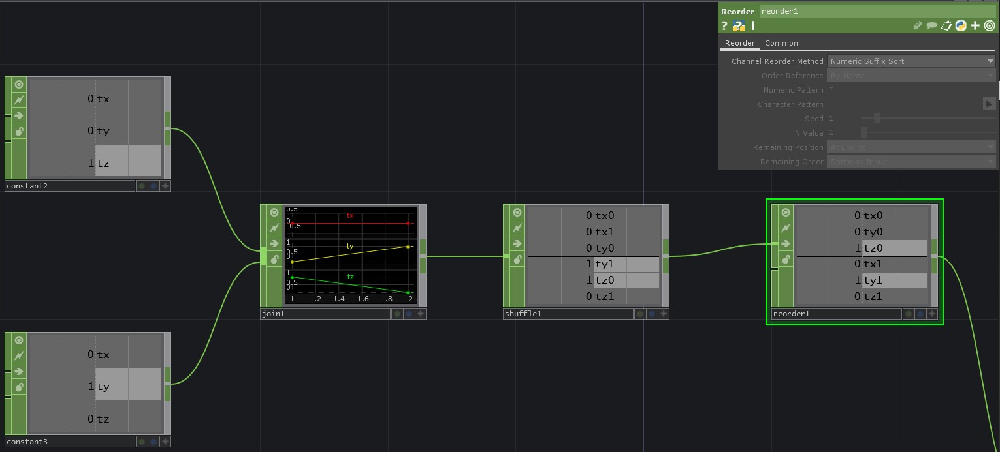

Instancing Instances
Static Position Instances of Instances
We can, however, also do all of these calculations in CHOPs rather than using the ** copy SOP**. In this example our blue boxes, and are red boxes are all instances — a more efficient approach, but one that takes a little more set-up to get right:

The most important part of this configuration is understanding and working with math CHOPs. For math CHOPs the order of connections matters in some cases, and allows us to exploit some interesting features of the operator.
For example, if our our first input is a single sample CHOP and our second input is a multi-sample CHOP, adding these CHOPs will repeat the operation across all of the samples in the second input. Let’s see a simple example of that. We have converted a line SOP to CHOPs, but want to move that over by one TouchDesigner unit. We can do this by using a math CHOP where we’re combining CHOPs by adding them. The first input should have three channels (tx, ty, tz), when we add this single sample CHOP to our multi-sample CHOP (our line SOP converted to a CHOP), we will add the values from our first input to all the samples. Here’s what that might look like:

I’ve added chopTo DATs so we can see the values — notice how the input values have been added to all samples. Similar to this behavior, if we have more input channels in our single sample first input, we’ll repeat the calculations to match the number of channels in the first input.
Let’s imagine that we have two constant CHOPs, each with three channels (tx, ty, tz). We join those CHOPs (this is similar to what you might see when you’ve converted a SOP to a CHOP) to simulate what we might get from a SOP. Next let’s shuffle these samples to get them all into single channels (again, simulating what we might need to do if we’re working with SOPs that are converted to CHOPs), then we need to re-order them so they have channel names in the order tx0, ty0, tz0, tx1, ty1, tz1.

Finally, in our thought experiment we’ve done all of this because we have a single line SOP that we’ve converted to CHOPs. We want to make a second line that’s transformed based on the values from our work above. But how can we turn one line into two lines? If we convert our line SOP to CHOPs, then add the two CHOPs together we’ll end up with a second set of transform channels. Shuffling these back together into just three channels will get us ready to use this data for instances:

Why oh why did we do all of that work? The behavior above is what we take advantage of in this portion of our example:

We flatten all of the positions from our first box, then use some tricky CHOP math to get new positions for all of our geometry, before shuffling our channels and samples back into order to be correctly displayed. This is a tricky concept, and taking some time to play with the math CHOP is an important part of learning how to best take advantage of this technique.
Tested in TouchDesigner099 2020.23680
Updated 06.03.20
Matthew Ragan
Zoe Sandoval